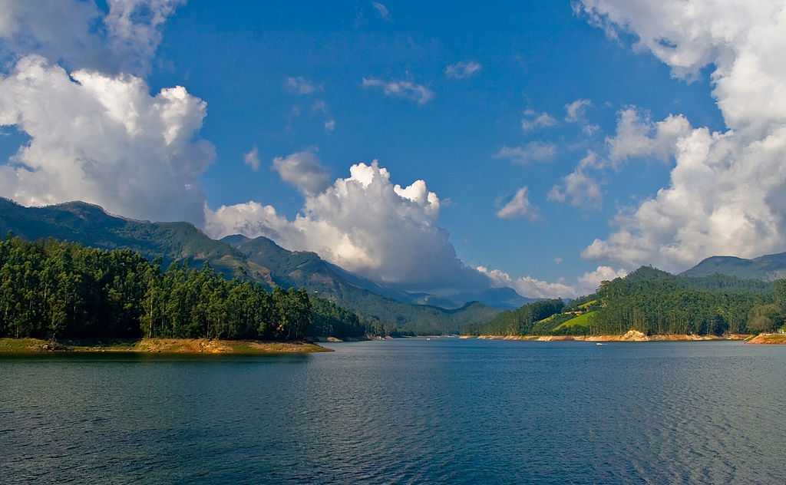
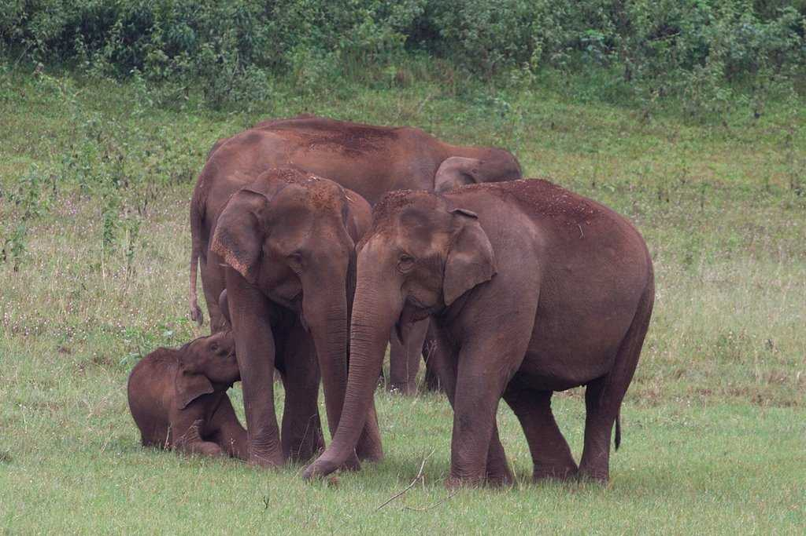

KERELA
Tour Itinerary
Day 1: Arrival in Kochi

- On arrival at Kochi International Airport/Railway Station, you will take a cab to the hotel.
- Transfer to the hotel and check in to the hotel.
- After freshening up, proceed for sightseeing in Kochi.
- Visit Adi Shankara Temple, Aluva Lord Shiva Temple, Adwaitha Asharamam, and Kodanad Elephant Training Camp.
- Return to the hotel.
- Overnight stay at Kochi.
Day 2: Kochi to Munnar

- After breakfast, proceed to Munnar.
- En-route enjoy the view of Cheeyappara waterfalls.
- On arrival at Munnar, check in to the resort.
- Overnight stay at Munnar.
Day 3: Munnar Sightseeing

- After breakfast, proceed for sightseeing in Munnar.
- Visit Rajmalai, Tea Museum, Mattupetty Dam, and Echo Point.
- Spend the evening at leisure.
- Overnight stay at Munnar.
Day 4: Munnar to Thekkady

- After breakfast, proceed to Thekkady.
- On arrival at Thekkady, check in to the hotel.
- Later, visit Periyar Wildlife Sanctuary or enjoy an Elephant Ride (can also add Spice Plantation tour).
- Overnight stay at Thekkady.
Day 5: Thekkady to Kumarakom
- After breakfast, proceed to Kumarakom.
- On arrival at Kumarakom, check in to the traditional houseboat.
- Enjoy the cruise through the backwaters.
- Overnight stay at Kumarakom.
Day 6: Kumarakom to Kochi
- Enjoy the morning cruise.
- After breakfast, proceed to Kochi.
- On arrival in Kochi, proceed for sightseeing.
- Visit Fort Kochi, Jews Street, Marine Drive, and enjoy shopping at Lulu Mall.
- Afterward, in the evening transfer to Hotel Near Nedumbassery Airport.
- Overnight stay at Kochi.
Day 7: Departure
- After breakfast, check out from the hotel and transfer to the Kochi Airport for your return journey back home.
- This ends Kerala Tour Package.